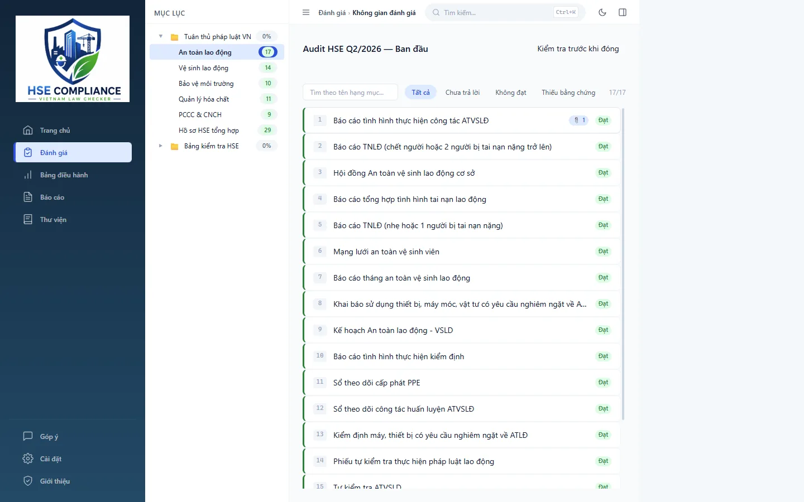
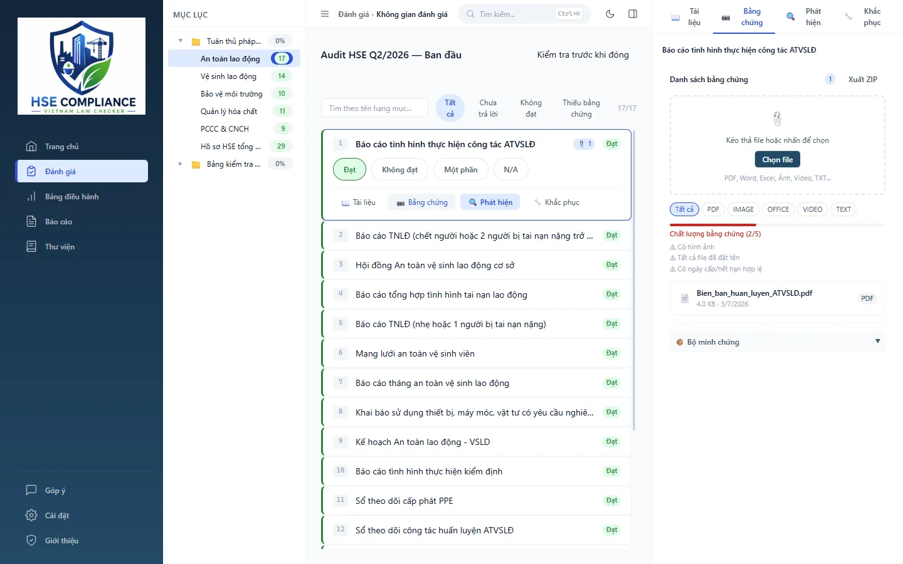
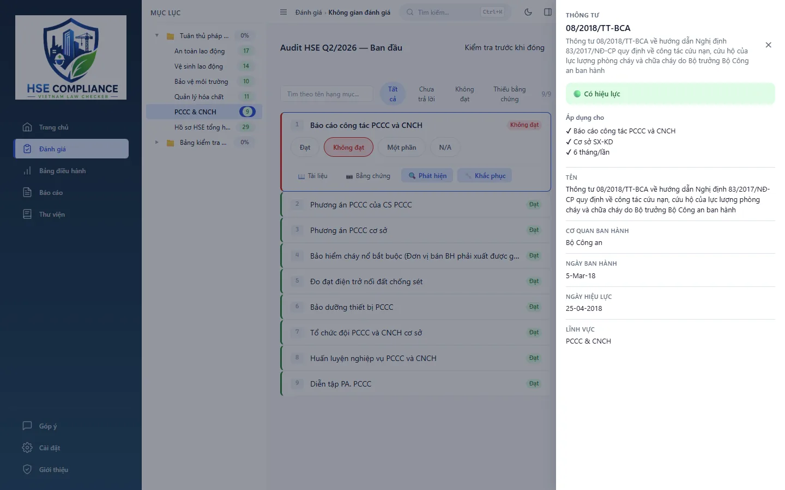
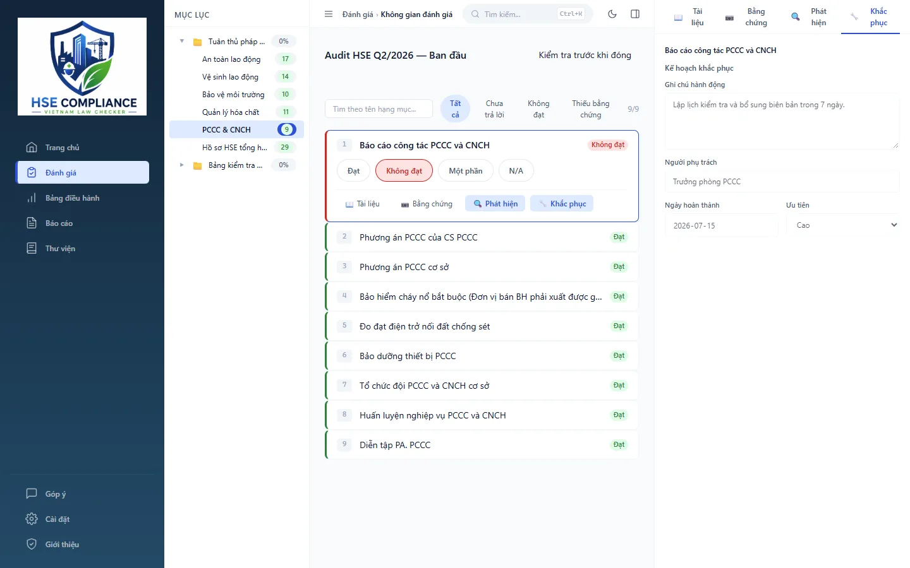
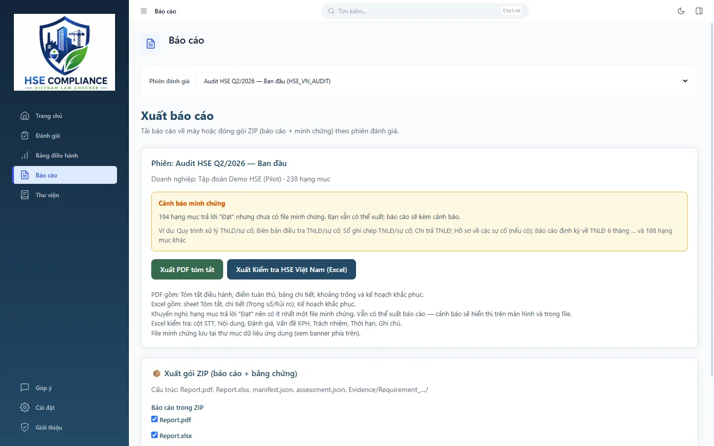

Phần mềm desktop chạy offline giúp doanh nghiệp tự đánh giá tuân thủ pháp luật An toàn – Sức khỏe – Môi trường (HSE) Việt Nam, chỉ ra khoảng trống hồ sơ và xuất báo cáo cho lãnh đạo. Không cần cloud — dữ liệu nằm trên máy của doanh nghiệp.
Bảng điều hành — bức tranh tuân thủ HSE theo các phiên đánh giá (dữ liệu demo).
3 bước sử dụng
Đánh giá theo một quy trình rõ ràng
Tạo phiên đánh giá → trả lời checklist kèm bằng chứng → rà soát → xuất báo cáo.
Khởi tạo & chọn danh mục
Nhập thông tin doanh nghiệp, tạo phiên đánh giá và chọn bộ kiểm tra phù hợp với loại hình, quy mô doanh nghiệp.
Đánh giá theo checklist
Với từng hạng mục, chọn Đạt / Không đạt / Một phần / Không áp dụng, đính kèm bằng chứng và ghi chú.
Xuất báo cáo hành động
Nhận danh sách khoảng trống pháp lý và kế hoạch khắc phục để chuẩn hóa hồ sơ; xuất PDF, Excel hoặc gói ZIP.
Tính năng
Factory Edition gồm những gì
Factory Edition dành cho nhà máy và cơ sở sản xuất, gồm hai bộ đánh giá chính và các công cụ quản lý hồ sơ đi kèm.
Bộ đánh giá
Kiểm tra HSE Việt Nam (HSE VN Audit)
Gộp hai phần trong cùng một phiên đánh giá: hồ sơ & báo cáo pháp lý theo quy định Việt Nam và bảng kiểm tra HSE tại cơ sở. Hạng mục được chia theo nhóm để rà soát lần lượt.
Mỗi hạng mục liên kết với tài nguyên tham khảo (văn bản pháp luật, biểu mẫu) — chỉ đọc, không lẫn với file của doanh nghiệp.

Không gian đánh giá — mục lục theo nhóm và kết quả từng hạng mục (dữ liệu demo).
Bộ đánh giá
Kiểm tra Lao động & Đạo đức (Labor & Ethic Audit)
Bảng tự đánh giá về lao động và đạo đức kinh doanh, hữu ích khi doanh nghiệp chuẩn bị cho các đợt đánh giá trách nhiệm xã hội từ khách hàng, ví dụ BSCI. Các hạng mục có liên kết chéo với phần HSE Việt Nam liên quan.
Hồ sơ
Bằng chứng gắn với từng hạng mục
Đính kèm nhiều file (PDF, ảnh, Office…) bằng kéo-thả; xem trước PDF, ảnh, TXT ngay trong phần mềm.
Mở file, mở thư mục, thay thế, đổi tên, xóa; có nhật ký thao tác lưu cục bộ.
Hạng mục trả lời “Đạt” nên có ít nhất một file bằng chứng; nếu còn thiếu, phần mềm cảnh báo trên màn hình xuất và trong file báo cáo.
Bộ lọc và nhãn chất lượng hồ sơ giúp tìm nhanh hạng mục chưa đạt hoặc còn thiếu minh chứng.

Bằng chứng gắn trực tiếp với hạng mục đang đánh giá (dữ liệu demo).
Tra cứu
Tra cứu căn cứ pháp lý offline
Mỗi hạng mục hiển thị căn cứ pháp lý liên quan. Mở chi tiết để xem tên đầy đủ, cơ quan ban hành, ngày ban hành, ngày hiệu lực và tình trạng hiệu lực của văn bản — dữ liệu nằm sẵn trong phần mềm, không cần Internet.
Danh mục được cập nhật bằng gói .hse-pack nhập offline; cập nhật không ghi đè bằng chứng đã lưu.

Chi tiết căn cứ pháp lý của hạng mục, tra cứu offline.
Điều hành
Bảng điều hành & kế hoạch khắc phục
Theo dõi mức độ tuân thủ của từng phiên, tiếp tục công việc đang dở. Các hạng mục chưa đạt trở thành phát hiện, kèm hành động khắc phục, người phụ trách, hạn xử lý và mức ưu tiên.
Phần tóm tắt điều hành giúp lãnh đạo nắm nhanh tình trạng tuân thủ để quyết định ưu tiên cho công tác HSE.

Kế hoạch khắc phục gắn với hạng mục Không đạt (dữ liệu demo).
Báo cáo
Xuất PDF, Excel và gói ZIP
PDF: tóm tắt điều hành, điểm tuân thủ, bảng chi tiết, khoảng trống và kế hoạch khắc phục.
Excel: bảng chi tiết từng hạng mục (đánh giá, vấn đề, trách nhiệm, thời hạn, ghi chú) và kế hoạch khắc phục.
Gói ZIP: báo cáo kèm toàn bộ bằng chứng theo phiên đánh giá — tiện lưu trữ hoặc chuyển giao.

Màn hình Xuất báo cáo theo phiên đánh giá (dữ liệu demo).
An toàn dữ liệu
Sao lưu & khôi phục
Sao lưu / khôi phục dữ liệu; tự động giữ 7 bản sao lưu gần nhất.
Tự lưu ảnh chụp (snapshot) khi đóng phiên đánh giá.
Khôi phục từ gói ZIP đã xuất khi cần chuyển máy hoặc phục hồi.
Dữ liệu & bảo mật
Dữ liệu ở lại trên máy của bạn
Chạy offline
Phần mềm hoạt động độc lập, không bắt buộc Internet và không có máy chủ bắt buộc.
Lưu cục bộ
Thông tin doanh nghiệp, kết quả đánh giá và file bằng chứng được lưu trong thư mục dữ liệu ứng dụng trên máy — không lưu lên cloud.
Kích hoạt offline
Bản quyền kích hoạt bằng file .lic; danh mục cập nhật bằng gói .hse-pack. Cả hai đều nhập từ máy, không cần kết nối.
Phạm vi & giới hạn
Phần mềm làm gì — và không làm gì
HSE Compliance là công cụ tự đánh giá, không thay thế tư vấn pháp luật hay thanh tra nhà nước.
Phù hợp để
Tự đánh giá tuân thủ theo checklist chuẩn hóa.
Quản lý bằng chứng theo từng hạng mục.
Theo dõi phát hiện và kế hoạch khắc phục.
Tra cứu văn bản pháp luật HSE offline.
Không bao gồm
Quản lý nhân sự, thiết bị, lịch thi công; quy trình giấy phép làm việc (PTW).
ERP / MES / quản lý tài sản.
Làm việc nhiều người cùng lúc theo thời gian thực.
Kết luận pháp lý thay doanh nghiệp — kết quả phụ thuộc thông tin, bằng chứng do doanh nghiệp nhập; cần đối chiếu văn bản hiện hành.
Đang phát triển
Module Xây dựng (Construction)
Bộ đánh giá hồ sơ pháp lý và hiện trường công trình đang được phát triển, chưa có trong Factory Edition v2.9.2.
Bản quyền
Dùng thử trước, kích hoạt khi phù hợp
Bản quyền tính theo máy: mỗi máy tính một file bản quyền .lic.
Dùng thử
Miễn phí
7 ngày, đầy đủ chức năng. Hết hạn dùng thử: chỉ xem lại dữ liệu đã lưu, không chỉnh sửa và không xuất báo cáo mới.
1 năm
200.000đ
1 máy · sử dụng 1 năm.
2 năm
300.000đ
1 máy · sử dụng 2 năm.
Vĩnh viễn
500.000đ
1 máy · không giới hạn thời hạn sử dụng.
Cách kích hoạt bản quyền
Trong phần mềm, mở menu Cấp phép và sao chép Mã máy (Machine ID).
Không. Phần mềm chạy offline; kích hoạt bản quyền và cập nhật danh mục đều bằng file nhập từ máy.
Kết quả đánh giá có thay cho ý kiến tư vấn hoặc kết luận thanh tra không?
Không. Đây là công cụ tự đánh giá, không thay thế tư vấn pháp luật hay thanh tra nhà nước. Doanh nghiệp cần đối chiếu văn bản pháp luật hiện hành khi ra quyết định.
Tôi muốn đổi sang máy khác?
Bản quyền gắn với Mã máy. Hãy liên hệ SA247 kèm Mã máy mới để được hướng dẫn cấp file bản quyền cho máy mới. Dữ liệu có thể chuyển bằng gói ZIP đã xuất.
Lỡ mất dữ liệu thì sao?
Khôi phục từ bản sao lưu tự động hoặc nhập lại gói ZIP workspace đã xuất trước đó.
Cập nhật phiên bản mới như thế nào?
Sao lưu dữ liệu trước, sau đó cài đè bộ cài phiên bản mới. Danh mục kiểm tra được cập nhật bằng gói .hse-pack và không ghi đè bằng chứng đã lưu.
Doanh nghiệp có nhiều nhà máy?
Mỗi cơ sở dùng một workspace riêng; trao đổi dữ liệu bằng xuất/nhập gói ZIP. Mỗi máy cài đặt cần một bản quyền.
Windows hoặc phần mềm diệt virus cảnh báo khi cài?
Bộ cài hiện chưa ký số, nên Windows SmartScreen có thể hiện cảnh báo. Hãy kiểm tra mã SHA256 của file tải về trùng với mã công bố bên dưới trước khi cài. Nếu phần mềm diệt virus chặn, thêm bộ cài và thư mục dữ liệu ứng dụng vào danh sách cho phép.
Gặp lỗi thì gửi thông tin gì?
Gửi file log trong thư mục logs của dữ liệu ứng dụng (trong %APPDATA%) kèm ảnh chụp màn hình tới support@sa247.vn.
Tải về
Tải bản dùng thử
Cài đặt và dùng thử đầy đủ chức năng trong 7 ngày. Khi phù hợp, liên hệ SA247 để nhận file bản quyền.
Phiên bản
HSE Compliance – Vietnam Law Checker · Factory Edition v2.9.2